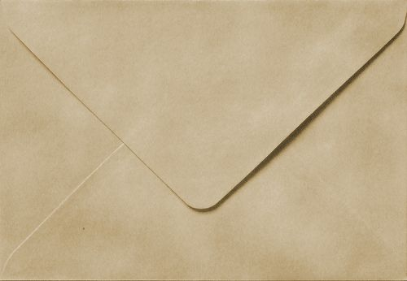

No sé muy bien en qué momento pasó todo tan rápido, pero de alguna forma ya han sido 200 días desde que nos conocemos. A veces me pongo a pensar en eso y me parece increíble cómo alguien puede volverse parte de tu día a día sin que te des cuenta. Cómo una persona empieza siendo solo “alguien” y termina siendo alguien que realmente importa. Durante este tiempo he aprendido a apreciar muchas cosas de ti. Tu forma de pensar, la manera en la que te esfuerzas por lo que te importa, y cómo incluso en los días cansados sigues dando lo mejor de ti. Eso dice mucho de quién eres. Me gusta cómo haces que las conversaciones se sientan naturales, cómo hay momentos simples que se quedan en la cabeza más tiempo del esperado. Pequeños detalles, palabras, risas, silencios… cosas que no parecen grandes, pero que se sienten importantes. Este no es un gesto enorme ni algo espectacular. Es solo una forma de decir que estos 200 días han significado algo para mí. Que el tiempo compartido, aunque sea en formas pequeñas, se aprecia. Gracias por existir en mi vida, por ser como eres